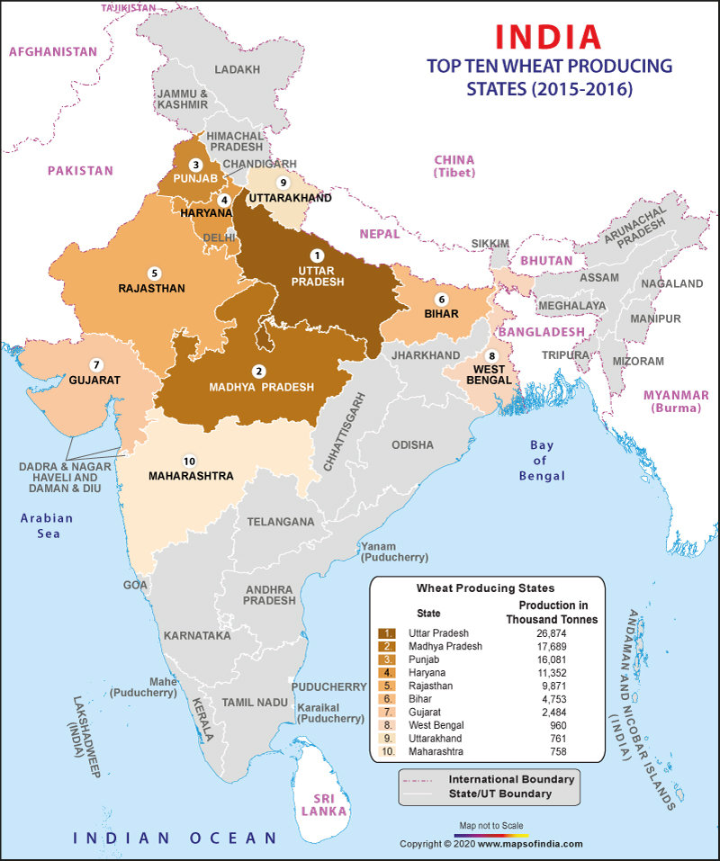

wheat is the staple food for Indians in the Northern and Western parts of India.
Temperature: Between 10-15°C (Sowing time) and 21-26°C (Ripening & Harvesting) with bright sunlight.
Rainfall: Around 75-100 cm.
Soil Type: Well-drained fertile loamy and clayey loamy (Ganga-Satluj plains and black soil region of the Deccan)
Top Wheat Producing States: Uttar Pradesh , Punjab , Madhya Pradesh , Haryana , Rajasthan,Bihar.
India is the second largest producer after China.
This is the second most important cereal crop and the main food crop, in north and north-western India.
Success of Green Revolution contributed to the growth of Rabi crops especially wheat.
Macro Management Mode of Agriculture, National Food Security Mission and Rashtriya Krishi Vikas Yojana are few government initiatives to support wheat cultivation.